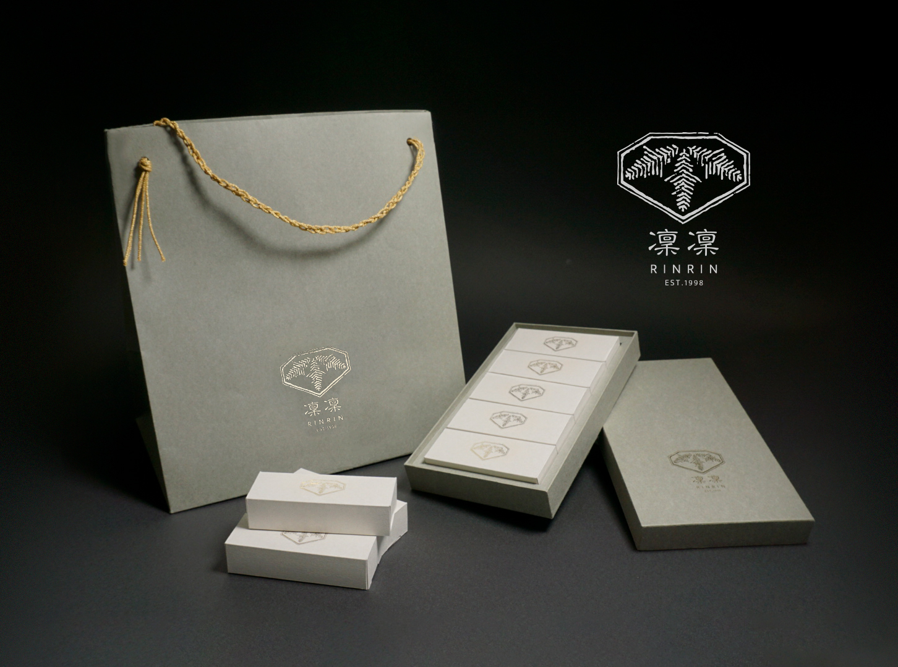
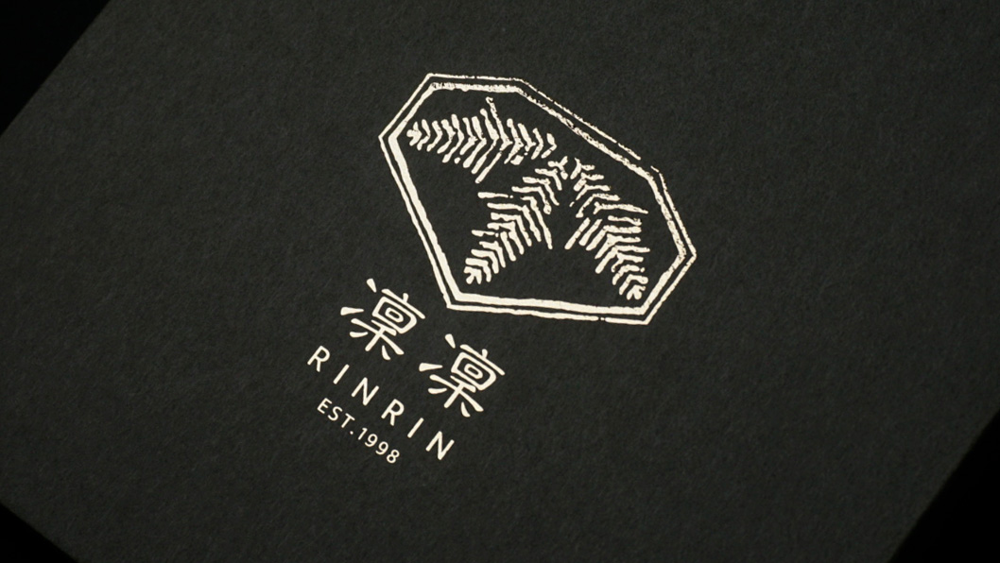

「大福」を目玉商品として、明治時代から東京丸の内に本店を構える架空の和菓子屋「凜凜（RINRIN）」をブランドコンセプトに、「ショッパー」「大福箱の収納箱」「大福箱」のパッケージデザインを行いました。
使用したツール
Illustrator・・・ロゴデザイン、レイアウト等
Photoshop・・・掲載画像のレタッチ
撮影作業・・・商品撮影
手書きスケッチ・・・デザインエレメントの描画
ブランドコンセプトについて
「自分の名前を屋号に取り入れた和菓子屋のブランド定義、パッケージ制作」が主な課題内容。自身の名前の「凜」を利用しました。 「凜凜（RINRIN）」は既存の和菓子店に埋もれることなく差異化することを目的とし、発音の独特さ、聞き馴染みさ、洗練性をイメージして設定しました。
シンボルマーク
本シンボルマークは「凜」の語源と家紋に使用されるような「蔦」や「柏」を連想させるようなビジュアルを掛け合わせました。 「凜」には「態度・気持ちなどがひきしまったさま、りりしいさま。」という意味合いに加え、 「氷でとざされて寒い。きびしい。」という意味を持ち合わせています。メイン商品である「大福」の白さと 「凜」の語源から「雪」を連想し、雪の結晶に見られる“樹枝六花”という中心の核から細長い枝が伸びているような形状をもとに、 六角形の中央から下半分をシンボルマークへあてがいました。
